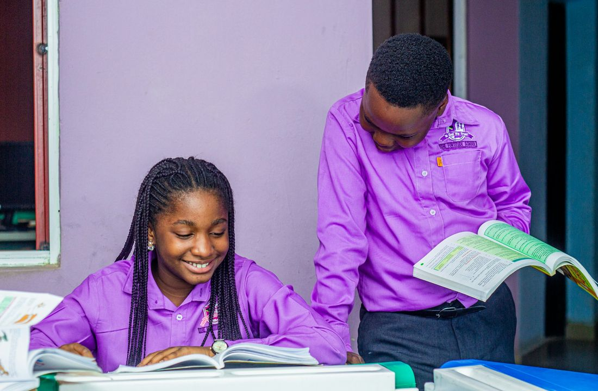

Mentoring
Harbor Mentors
A steady connection with a trusted adult. Students meet with a volunteer mentor to build confidence, set school and personal goals, and strengthen their support network.
- Audience
- Students ages 11–14 and their guardians.
- Format
- Weekly small-group mentoring with individual mentor check-ins. Each mentor supports four students.
- Schedule
- Tuesdays, 3:30–4:30 p.m., during the school term.
- Locations
- Bayview Middle School · Little Havana (fictional)
- Languages
- English · Spanish · Haitian Creole
- Capacity
- 20 students in the demonstration cohort.
- How families join
- Guardian registration and staff-confirmed mentor assignment.
More details
Program lead
Program manager, with an authorized session leader and volunteer coordinator.
Staffing
One session leader and five screened volunteer mentors for the 20-student demo cohort.
Follow-through
Two consecutive unexplained absences create an assigned family check-in.
What participants do
- Personal goal check-ins
- Listening and communication practice
- School transitions and trusted-adult mapping
What we measure
- Unique enrolled students and attended sessions
- Active mentor assignments and approved volunteer hours
- Paired confidence/connection self-assessments, with missing responses disclosed